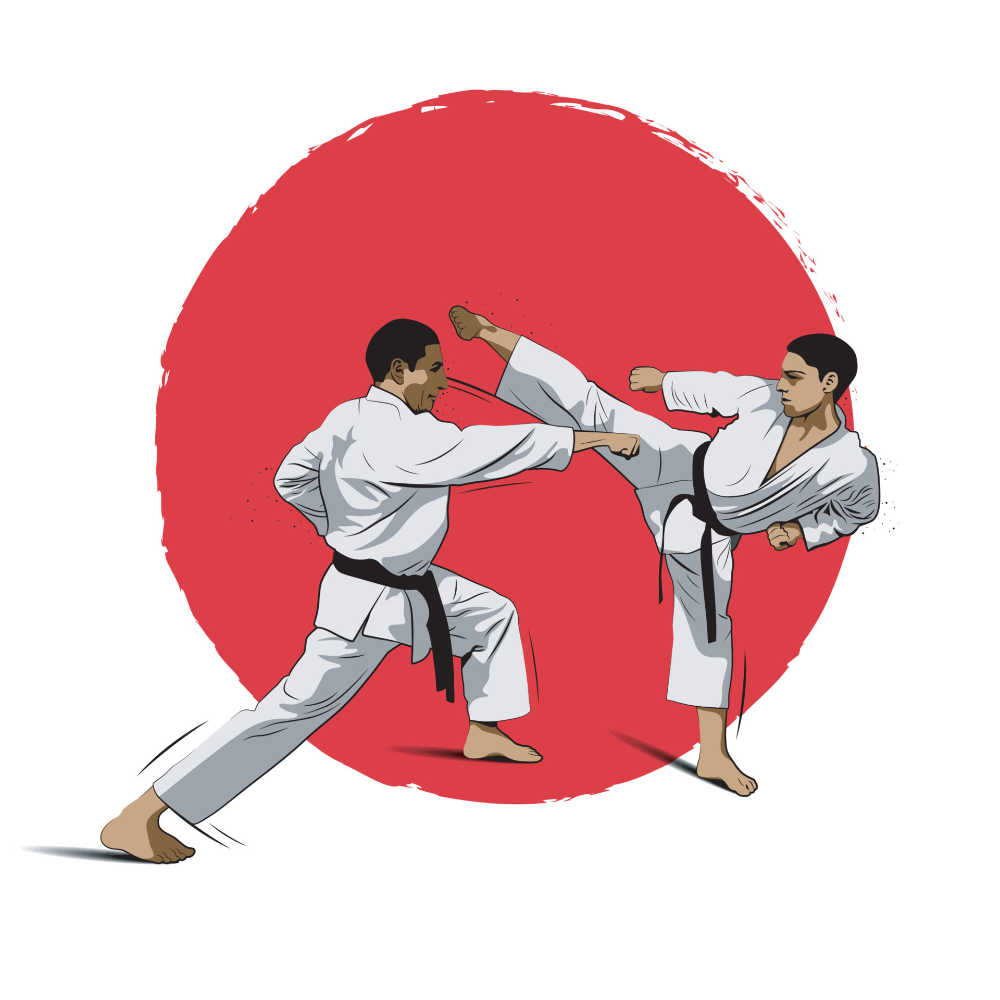
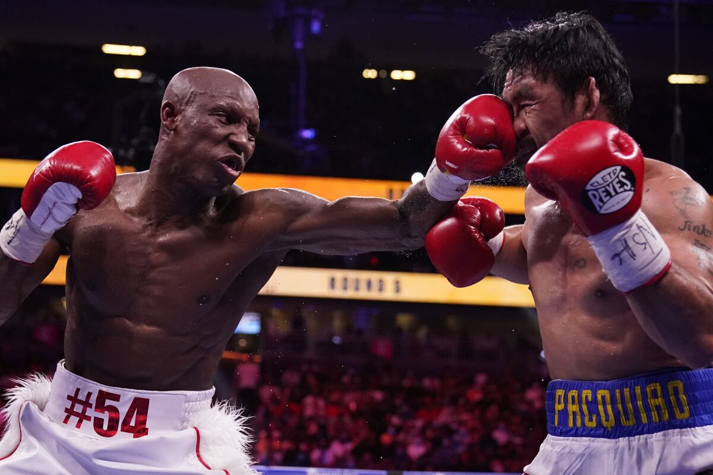
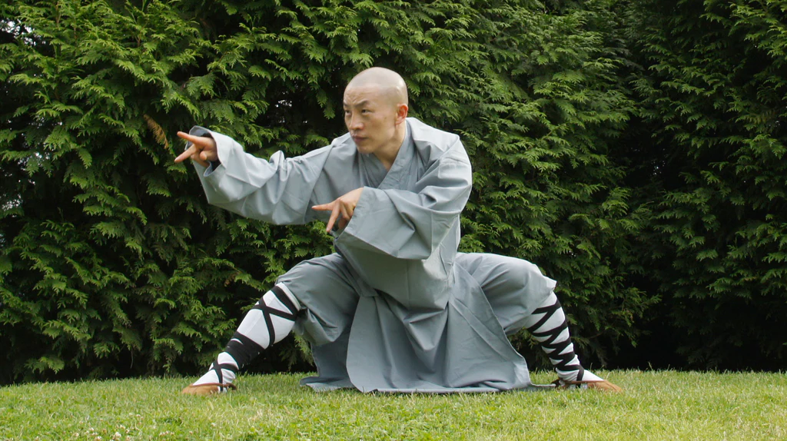
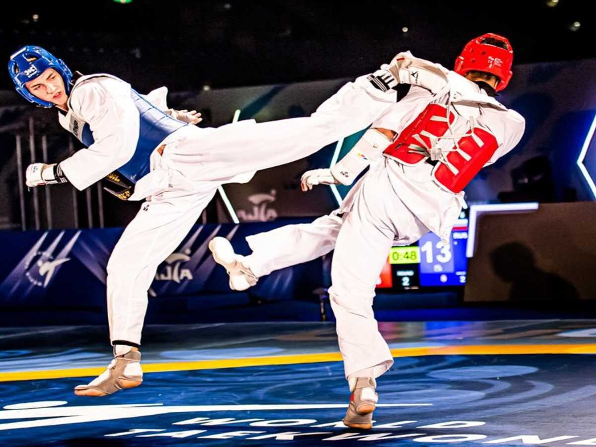
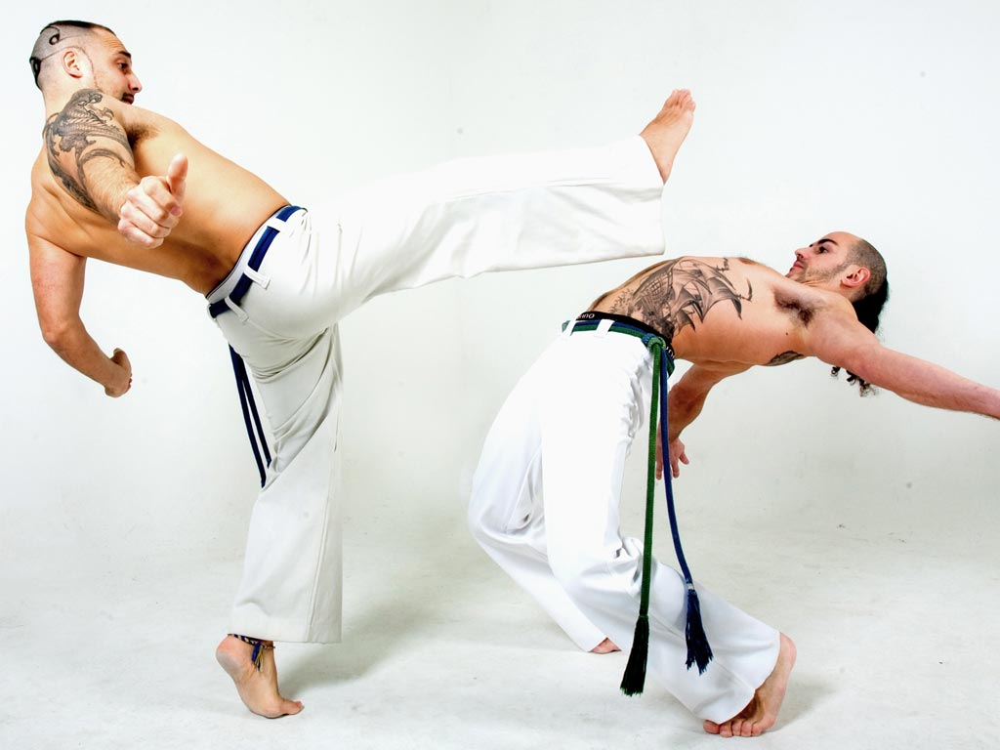

Artes Marciales con golpeo
Una de las categorias más destacadas en las Artes Marciales es el uso de técnicas de golpeo, que engloban una amplia variedad de técnicas de puñetazos, patadas, rodillazos y codos.En el siguiente apartado se mostrarán con un breve resumen las 6 artes marciales sin armas de "golpeo" más comunes y famosas:
-
Karate
El karate (del japonés, "mano vacía"), es un arte marcial (sin armas) de autodefensa en la que desde posiciones de equilibrio se dirigen o enfocan puñetazos o patadas acompañadas de respiraciones y gritos especiales.
Se presta gran atención a conocer los puntos más vulnerables del cuerpo humano que pueden ser atacados por medio de las manos, codos, rodillas o pies, que son la cara, el cuello, el plexo solar o pecho, la espina dorsal o columna, las ingles y los riñones. -
Boxeo
Se trata de un arte marcial en el que únicamente se combate con los puños y en el que se aplica gran fuerza en cada golpe. Si bien la versión más conocida es inglesa, en realidad existen diversas variantes repartidas en las diversas culturas, una de las más antiguas de las cuales procede de Etiopía.
Se practica dentro de un ring, y a pesar de tener fama de violento, cuando se practica de forma realmente deportiva contribuye a favorecer valores como la disciplina, la resistencia (no solo física, sino también en lo que se refiere a las adversidades) y el respeto por el contrincante. Asimismo contribuye a canalizar emociones. -
Kung-Fu
Una milenaria arte marcial china y una de las artes marciales antiguas más conocidas, el kung-fu es una disciplina por lo general de contacto directo en el que se usa el cuerpo a cuerpo a partir de puñetazos, patadas, agarres, desplazamientos y diferentes movimientos acrobáticos para mantener el equilibrio interior al entrenar y también como autodefensa. Su origen se encuentra en los monjes shaolín, quienes lo crearon con el fin de que los monjes pudieran defenderse.
El kung-fu parte de una base filosófica budista y taoísta que pretende enseñar el valor del esfuerzo y otros tales como humildad, confianza, voluntad, justicia, perseverancia, valor y honestidad. -
Muay Thai
Arte marcial de origen tailandés y cierta peligrosidad, ya que emplea técnicas con potencial letal. Centrada en el contacto directo cuerpo a cuerpo, esta disciplina tiende a procurar una derrota rápida del rival con golpes fuertes y poderosos. En esta disciplina se permite la utilización de todas las extremidades y la mayor parte del cuerpo siendo de las pocas artes marciales que permiten el uso del codo a puntos muy específicos como codo a la cabeza.
Es considerado un tipo de lucha extrema, y es ilegal en algunos países.
-
Taekwondo
El Taekwondo es un arte marcial coreano que se caracteriza por sus poderosas patadas y técnicas acrobáticas. Su nombre se compone de tres partes: "Tae" que significa pie, "Kwon" que significa puño, y "Do" que significa el camino o la disciplina. Esta disciplina se enfoca en el desarrollo físico, mental y espiritual de los practicantes.
Las principales características del Taekwondo son las patadas de alta velocidad y potencia, así como las técnicas de puñetazos, rodillazos y bloqueos. Los practicantes también aprenden formas o secuencias de movimientos llamadas "Poomsae", que combinan patadas, puñetazos y bloqueos en secuencias específicas. -
Capoeira
El capoeira es un arte marcial procedente de Brasil, concretamente de los antiguos esclavos africanos, los cuales desarrollaron esta disciplina de defensa personal como resistencia a la dura opresión y situación que vivían aunando técnicas de combate, danza y diversas acrobacias.
Se trataba de una forma de conservar diferentes elementos culturales, además de una manera disimulada (el hecho de que se asemeje a una danza lo haría menos sospechoso) de practicar un estilo de combate entre la población esclavizada.
Este estilo de arte marcial es rápido y muy técnico, además de requerir de mucha habilidad y agilidad. Los movimientos emplean tanto brazos (no es frecuente el uso de los puños) como piernas, e incluyen tanto ataques como defensa. Además favorece la flexibilidad y la atención a los movimientos del rival desde ángulos poco frecuentes en otras disciplinas.